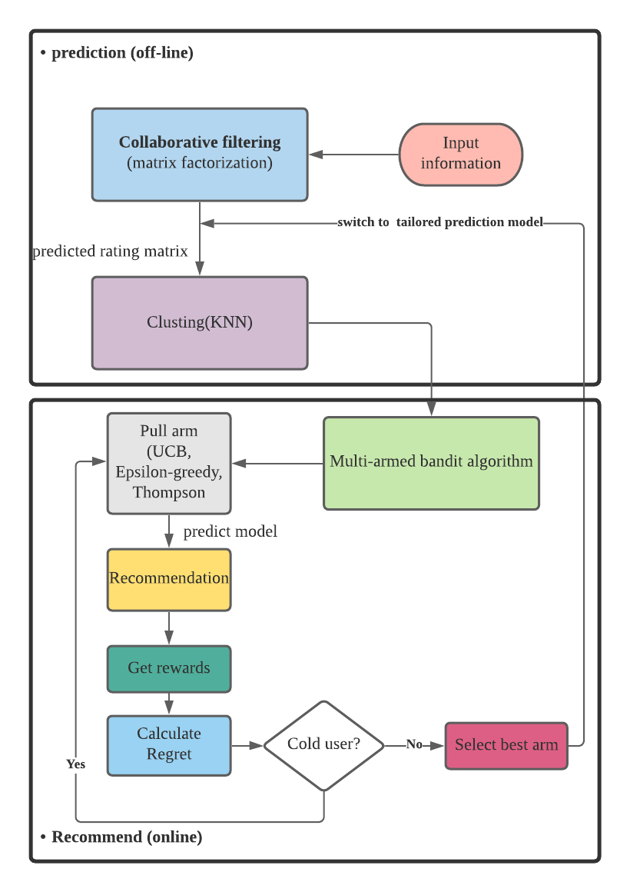
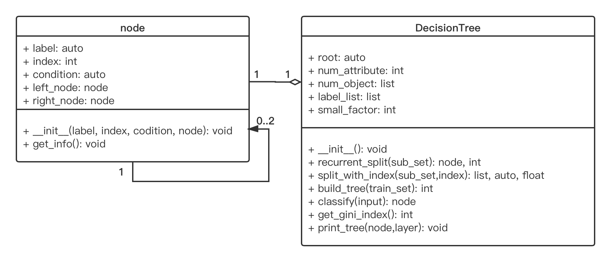
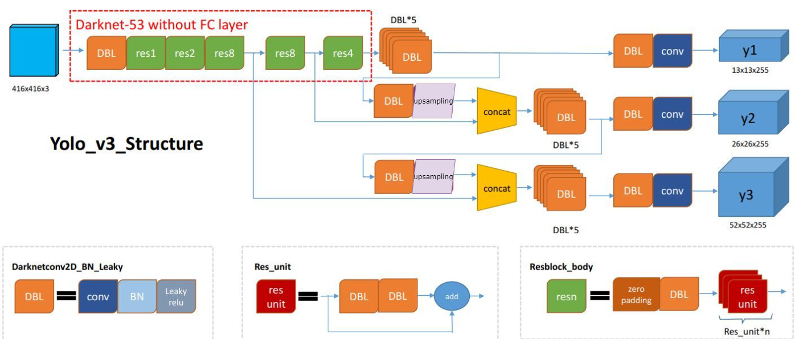

Shenghao XuReasearch Assistant
Center of Cyber Logistics |
 |
If there are suitable opportunities and compatible research interests, feel free to contact me.
Biography
Shenghao XU is currently a research assistant in the Center of Cyber Logistics (CCL), The Chinese University of Hong Kong. Previously, He received his Master's degree in the Department of Computer Science and Engineering, The Chinese University of Hong Kong, in 2021, supervised by Prof. John C.S. Lui. , and his B.Sc. (1st hon.) degree from Hong Kong Metropolitan University in 2020, under the supervision of Prof. Hung Kevin.
His research interest lies in Computer Vision, Deep Learning and Online Learning (e.g., Multi-armed Bandits).
News
- [05/2021] Successfully defended master's dissertation. Sincere appreciation to Prof. John C.S. Lui.
- [10/2020] Won the merit award in the Inter-Institutional Competition for Best Facility Management Project Presentation organised by the Hong Kong Chapter of International Facility Management Association.
- [10/2020] Awarded the entrance scholarship from The Chinese University of Hong Kong.
- [06/2020] Awarded the Katie Shu Sui Pui Charitable Trust Scholarship.
- [04/2020] Awarded the ACEU sponsorship from Hong Kong Metropolitan University.
- [02/2020] Paper on automatic detection and recognition of weapons in surveillance video was accepted by ISCAIE'20. [Link].
Publications

|
Development of an AI-based System for Automatic Detection and Recognition of Weapons in Surveillance Videos. Shenghao XU, Kevin Hung IEEE Symposium on Computer Applications & Industrial Electronics (ISCAIE), 2020. |
|  | BanditMF: Multi-Armed Bandit Based Matrix Factorization Recommender System. Shenghao XU, John C.S. Lui arXiv [Paper][Code] |
Selected Projects
|  | Decision Tree Classifier to Predict the Income of the Adult in America. In this project, we proposed a modified version of Hundt's algorithm to construct a decision tree for predict the income of the adult in America. To avoid unreliability and overfitting occur in the subtree, we proposed a parameter called ‘small factor’ which shows how small the subset is, and by comparing the accuracy of the model, we can split the data-set more appropriately. |
|  | Ncnn-YOLOv3 Acceleration and Implementation. This project designs and implements the porting of YOLOv3 to mobile and uses YOLOv3 for object detection. During the migration, NCNN, which is the high-performance neural network inference computing framework, is used to quantify and reduce the size of the YOLOv3 model, ultimately enabling acceleration without compromising detection accuracy on the mobile side. [Report][Code] |
| Searchable Encryption. In recent years, with the rise of GPU and cloud computing, the security of traditional cryptography has been challenged, which leads to the emergence of new cryptography technologies. In this report, the state-of-the-art cryptography technology-searchable encryption(SE) will be illustrated and discussed. [Report] |
Honors & Awards
-
Merit Award in Inter-Institutional Competition on Facility Management Project by IFMA (Oct. 2020) -
Entrance Scholarship, The Chinese University of Hong Kong (Oct. 2020) -
Dean's List (Aug. 2020) -
The Katie Shu Sui Pui Charitable Trust Scholarship (Jun. 2020) -
Outstanding Student Award (Jun. 2020) -
Dean's List (Jul. 2019)
Experience
Center of Cyber Logistics, The Chinese University of Hong Kong, Hong Kong
YY Inc., Guang Zhou, China
Sightseeing Cable Co., Ltd., Anhui, China
Professional Activities
-
Journal Reviews:
ACM Transactions on Information Systems (TOIS)
Teaching
| 2021-2022 | Fall | Advanced Business Analytic Practicum (DSME 6696BAP1) |
Miscellaneous
Pome: the largest among surviving works by Hui-tsung
Messages
Leave a Message
© Runze S.H XU | Last updated: June. 24th 2022